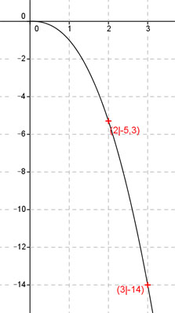

Aufgabe 58 Ergänzen Sie die Wertetabelle für den Graphen: y = -x2,4 x 2 3 y -5,3 -14 f(2) = -22,4 = -5,3 mit der xy - Funktion des Taschenrechners berechnet. f(x) = -14 eingesetzt : -14 = -x2,4 |*(-1) 14 = x2,4 Logarithmieren: lg 14 = lg x2,4 lg 14 = 2,4 * lg x lg 14 1,1461 lg x = -------- = --------- = 0,4776 --> x = 100,4776 = 3 2,4 2,4 